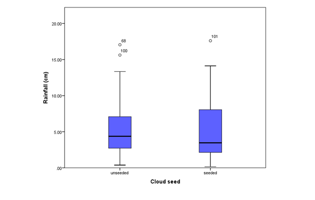

Tutorial Questions: Module 2
Note: * Indicates Expanded Competencies
2.4 Question 1: Describing Distributions
- Construct a stem-and-leaf display of the following data:
2.73, 2.79, 2.85, 2.85, 2.53, 2.37, 2.61, 2.67, 2.78, 2.65, 2.84, 2.69, 2.72, 2.63, 2.68
Drag the leaves into the correct stem.
- Describe the distribution in terms of shape, centre, spread and outliers.
Select the most appropriate description.
(b) Describe the distribution
Shape
Centre
Spread
Outliers
2.5 Question 2: Assignment Results
The following represent the assignment results (out of 100) for a class of 20 statistics students:
85, 38, 92, 93, 100, 88, 78, 79, 96, 81, 62, 39, 77, 78, 83, 91, 90, 85, 99, 97
Figure 2.1: Histogram of assignment results (n = 20)
For this data and Figure 2.1 complete the following questions:
- Describe the distribution of Assignment Results in terms of shape, centre, spread and outliers (including how many student results could be considered to be outliers).
Shape:
Centre:
Spread:
Outliers:
- What centre and spread would you use to describe this distribution? Why?
- Using a computer or calculator, calculate the mean of the data set.
- Using a computer or calculator, calculate the standard deviation of the data set.
- Calculate the median of the data set (using both software and by hand).
- Why are the mean and median different/similar?
See It In Action: Mean vs Median Tug-of-War
The same 20 assignment results are plotted below as draggable dots on a number line. Drag any dot and watch how the mean (red) and median (blue) react differently. At the starting positions, the mean and median should match your answers to (c) and (e).
- Reproduce these results (graph and descriptive statistics) using a statistical software package. Tick each item below that you sucessfully reproduced.
- What 5 numbers make up the five-number summary?
- *Calculate Q1 and Q3 of the data set by hand and then fill in the numbers of the five-number summary.
- *Calculate the IQR of the data set by hand.
2.6 Question 3: Cloud Seeding in Tasmania
An experiment was carried out in Tasmania, Australia between 1964 and 1971 to ascertain the effectiveness of cloud-seeding to promote rain [1]. Some of the data from this experiment are displayed in Figure 2.2. Compare in fewer than 75 words, the distributions of rainfall from the seeded and unseeded clouds. You should mention shape, centre, spread, and outliers in your discussion.
[1] (Miller, A.J. et al (1979) ‘Analyzing the results of a cloud-seeding experiment in Tasmania’, Communications in Statistics-Theory & Methods A8(10),1017-1047)

Figure 2.2: Side by side boxplots of rainfall data.
Both groups are skewed right (positive) with some outliers. Both groups seem to have similar shapes although the middle 50% of cases in the seed group cover a wider range (~2.5 - 7.5) than the unseeded group (~3.0 - 6.0) and the median of the seeded group is a bit lower than the unseeded group. Excluding the outliers, the distributions are both still fairly skewed.
2.7 Further Practice from the Textbook
Answers to these questions are located in the back of the textbook. If you require further explanation, please ask in the Module Content Discussion Forum on the Study- Desk.
• Questions 3.25, 4.31, 4.33 (De Veaux, Velleman & Bock, (4th edition))
• Questions 2.53, 4.31, 4.33 (De Veaux, Velleman & Bock, (5th edition))